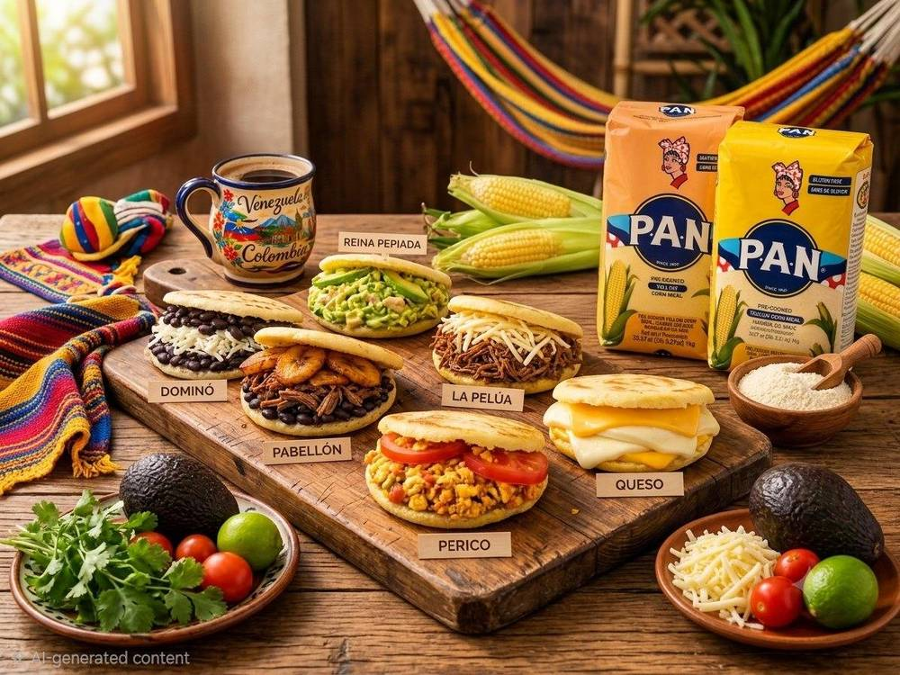
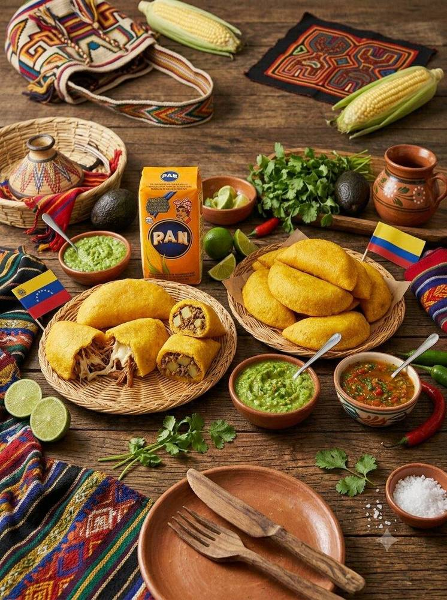
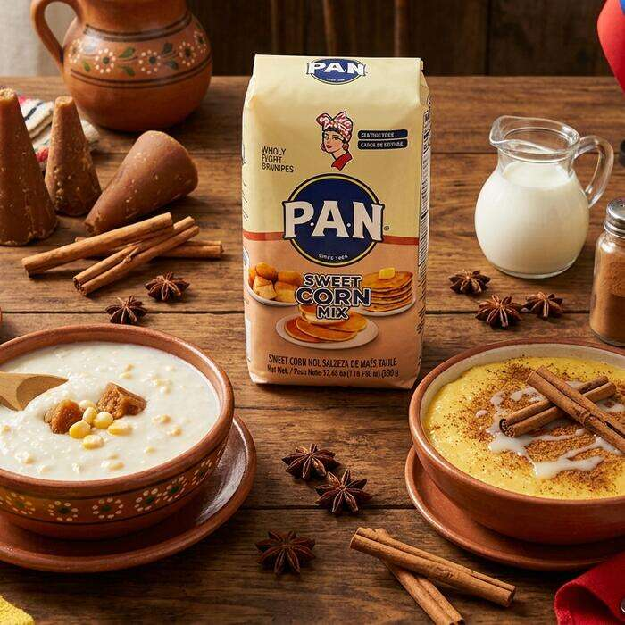
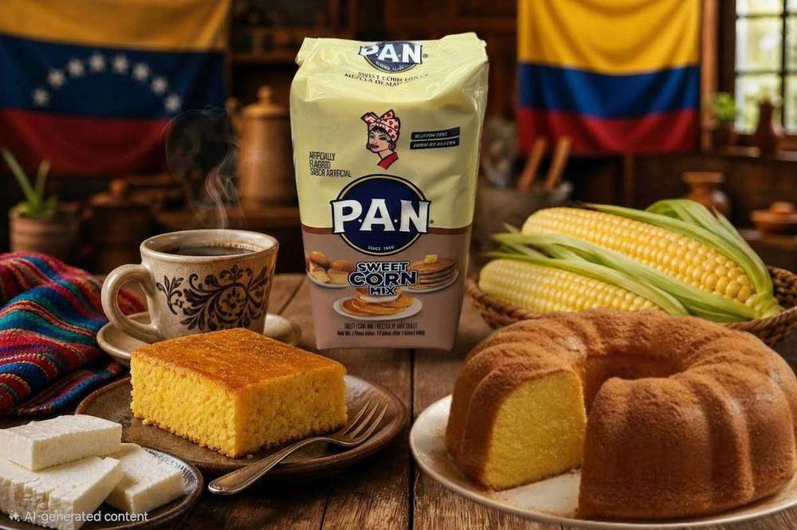
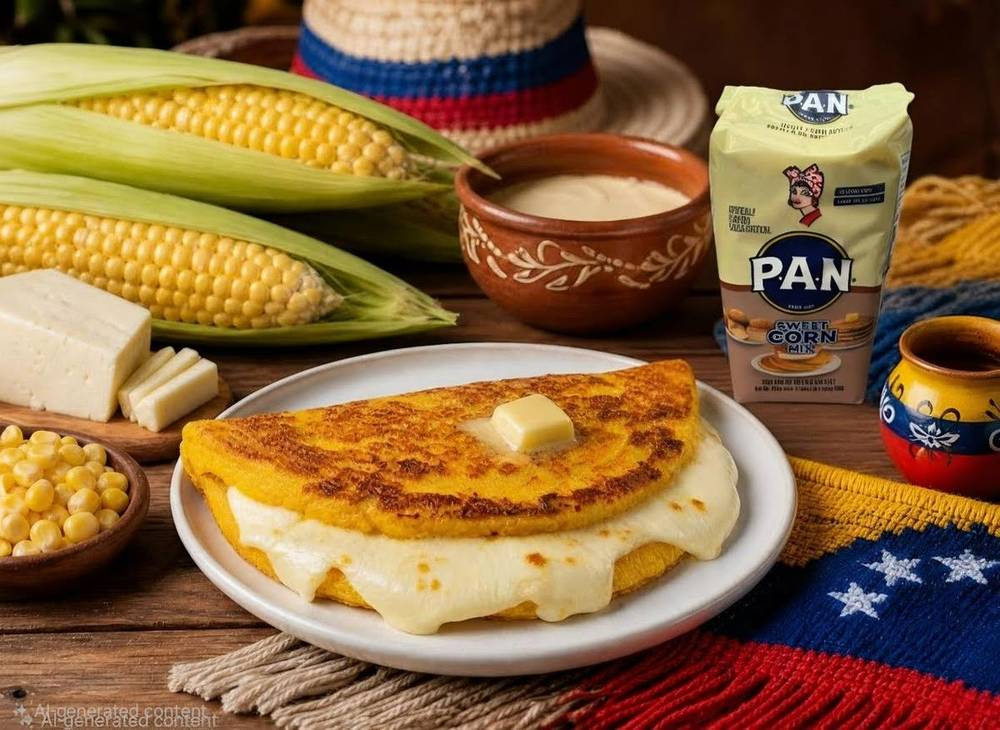
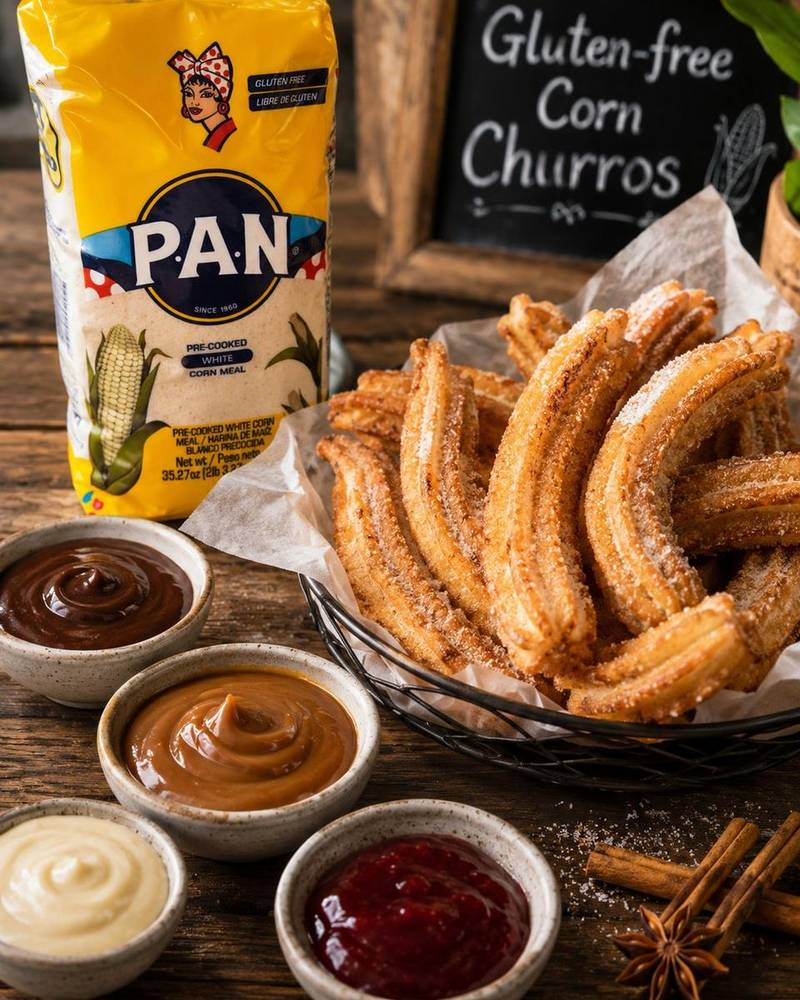

What Can You Make?
PAN Flour is super versatile. Click any recipe to see the full steps!

Soft, round corn cakes stuffed with melted cheese, chicken avocado, black beans or butter. A daily staple in Venezuelan and Colombian homes.
- Mix flour, salt and water until smooth. Rest 5 min.
- Shape into palm-sized balls, flatten to ~1cm thick rounds.
- Cook on medium pan 5–7 min each side until golden.
- Finish in oven 180°C for 10 min for fluffy inside.
- Cut open and fill with cheese, avocado, chicken or beans.

Traditional Venezuelan Christmas dish — spiced meat wrapped in corn dough and banana leaves, then boiled. Rich, festive and full of flavour.
- Cook chicken or pork with onion, garlic and spices. Let cool.
- Mix yellow flour with warm water, salt and annatto oil until smooth.
- Soften banana leaves over flame. Cut into rectangles.
- Spread thin dough on leaf. Add filling in centre.
- Fold banana leaf tightly and tie with string.
- Boil in salted water 45–60 min. Serve hot.

Crispy golden fried pockets filled with seasoned meat and melted cheese. A favourite snack in Venezuela and Colombia.
- Mix flour, water and salt into smooth dough. Rest 5 min.
- Flatten small dough ball into thin circle on a plastic bag.
- Place meat and cheese on one half.
- Fold into half-moon, press edges firmly to seal.
- Deep fry at 180°C for 3–4 min until golden crispy.
- Serve with hot sauce, avocado or lemon.

Hearty corn parcels filled with chicken, pork and vegetables, wrapped in banana leaves. A beloved Sunday morning classic in Colombia.
- Season chicken with salt, cumin and garlic. Cook until half-done. Cube vegetables.
- Mix flour with warm water, salt and oil into soft dough.
- Spread dough 1cm thick on softened banana leaf.
- Add chicken, potato, carrot and peas on top.
- Fold banana leaf tightly and tie with string.
- Steam or boil 60–90 min. Serve hot.

A warm, comforting sweet porridge — a beloved Colombian dessert with cinnamon. Great for breakfast or after dinner. Kids love it!
- Dissolve sweet corn flour in a little cold milk to avoid lumps.
- Heat remaining milk in saucepan over medium heat.
- Add flour mixture, stirring constantly.
- Add sugar and cinnamon. Stir until thick (5–8 min).
- Pour into bowls, sprinkle extra cinnamon on top. Serve warm.

A moist and naturally sweet South American corn cake — simple to bake and perfect for afternoon tea or dessert.
- Preheat oven to 180°C. Grease baking tin.
- Beat eggs, sugar and melted butter together.
- Add milk and mix well.
- Stir in flour and baking powder until smooth batter.
- Bake 30–35 min until golden. Cool 10 min before slicing.

Venezuelan corn pancakes folded with melted queso de mano (mozzarella) and butter. Sweet, soft and absolutely delicious!
- Mix sweet corn flour, milk, egg, butter and salt into smooth batter.
- Heat non-stick pan on medium with a little butter.
- Pour a ladleful of batter, spread into round pancake shape.
- Cook 3–4 min until bubbles appear, flip and cook 2–3 more min.
- Place mozzarella on one half and fold over.
- Serve immediately while cheese is warm and melted!

Crispy golden churros made with PAN pre-cooked corn flour — naturally gluten free and dusted with cinnamon sugar. Easy to make at home.
- Heat the water with sugar, salt and butter until warm and the butter melts.
- Gradually stir in the PAN corn flour until a soft, smooth dough forms. Rest 5 min.
- Knead lightly until pliable — add a splash of water if dry, a little flour if sticky.
- Spoon into a piping bag with a star tip and pipe 10–12 cm strips, cutting with scissors.
- Fry in oil at 180°C for 3–4 min, turning, until golden and crisp. Drain on paper towels.
- Roll in cinnamon sugar while warm. Serve with chocolate or dulce de leche. Enjoy!